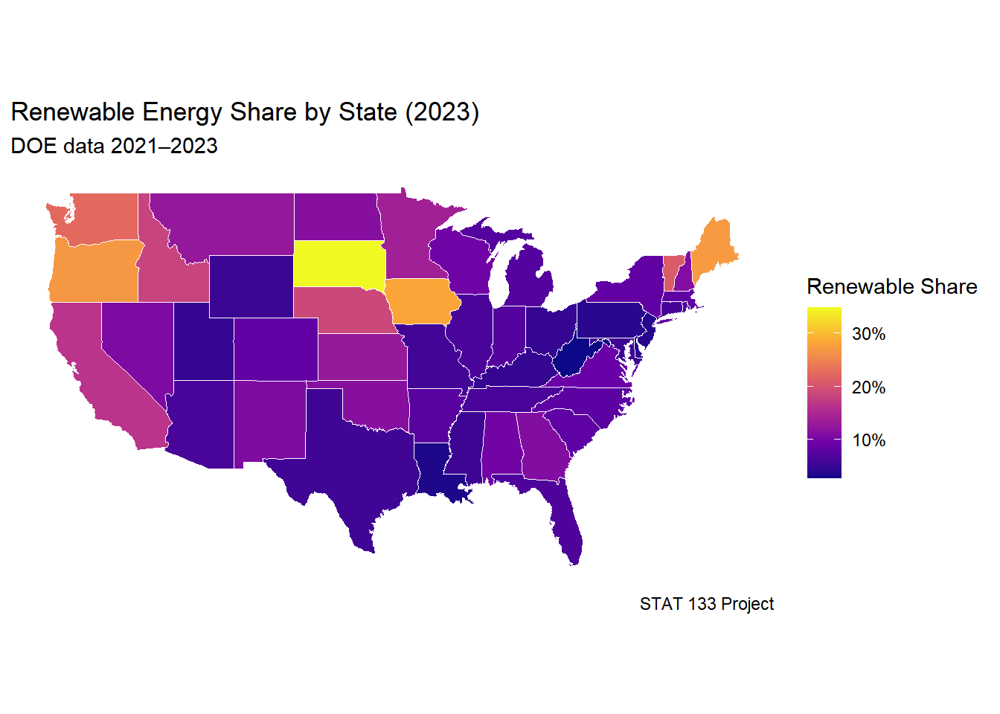
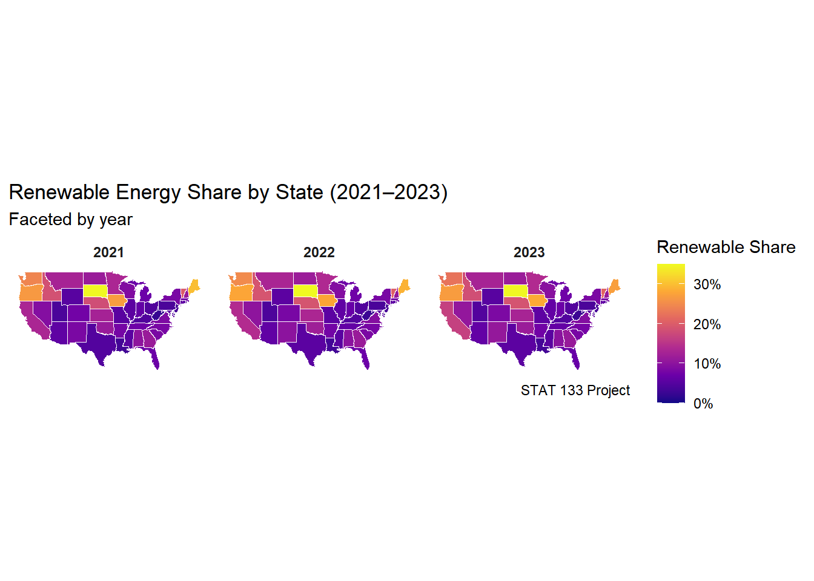

── Attaching core tidyverse packages ──────────────────────── tidyverse 2.0.0 ──
✔ dplyr 1.1.4 ✔ readr 2.1.5
✔ forcats 1.0.0 ✔ stringr 1.5.1
✔ ggplot2 4.0.0 ✔ tibble 3.2.1
✔ lubridate 1.9.4 ✔ tidyr 1.3.1
✔ purrr 1.0.4
── Conflicts ────────────────────────────────────────── tidyverse_conflicts() ──
✖ dplyr::filter() masks stats::filter()
✖ dplyr::lag() masks stats::lag()
ℹ Use the conflicted package (<http://conflicted.r-lib.org/>) to force all conflicts to become errors
library(janitor)
Attaching package: 'janitor'
The following objects are masked from 'package:stats':
chisq.test, fisher.test
library(readr)library(stringr)library(scales)
Attaching package: 'scales'
The following object is masked from 'package:purrr':
discard
The following object is masked from 'package:readr':
col_factor
library(maps)
Attaching package: 'maps'
The following object is masked from 'package:purrr':
map
library(leaflet)library(viridis)
Loading required package: viridisLite
Attaching package: 'viridis'
The following object is masked from 'package:maps':
unemp
The following object is masked from 'package:scales':
viridis_pal
Part 1:Defining Research Question
Chosen Question:
The main research question of this project is:
Do electric vehicles actually use clean electricity sources?
To explore this, I propose the following sub-questions:
How has the share of renewable energy changed from 2021 to 2023 across U.S. states?
Are states with more EV registrations powered by cleaner energy sources?
Do states with higher renewable energy shares have lower or higher average electricity prices?
Part 2: Data Preparation and Cleaning
getwd()
[1] "C:/ev-power-qiguofeng-spec-main"
# Renewable energy use by yearabbr_to_name <-setNames(state.name, state.abb)abbr_to_name <-c(abbr_to_name, c(DC ="District Of Columbia"))to_name <-function(s){ a <-toupper(str_trim(s)) out <-ifelse(a %in%names(abbr_to_name), abbr_to_name[a], str_to_title(a))str_squish(out)}# ---------- READ ----------renew_2021 <-read_csv("C:/ev-power-qiguofeng-spec-main/ev-power-qiguofeng-spec-main/data/renew-use-2021.csv", show_col_types =FALSE) |>clean_names()renew_2022 <-read_csv("C:/ev-power-qiguofeng-spec-main/ev-power-qiguofeng-spec-main/data/renew-use-2022.csv", show_col_types =FALSE) |>clean_names()renew_2023 <-read_csv("C:/ev-power-qiguofeng-spec-main/ev-power-qiguofeng-spec-main/data/renew-use-2023.csv", show_col_types =FALSE) |>clean_names()total_2021 <-read_csv("C:/ev-power-qiguofeng-spec-main/ev-power-qiguofeng-spec-main/data/total-use-2021.csv", show_col_types =FALSE) |>clean_names()total_2022 <-read_csv("C:/ev-power-qiguofeng-spec-main/ev-power-qiguofeng-spec-main/data/total-use-2022.csv", show_col_types =FALSE) |>clean_names()total_2023 <-read_csv("C:/ev-power-qiguofeng-spec-main/ev-power-qiguofeng-spec-main/data/total-use-2023.csv", show_col_types =FALSE) |>clean_names()price_raw <-read_csv("C:/ev-power-qiguofeng-spec-main/ev-power-qiguofeng-spec-main/data/av-energy-price-2021-2023.csv", show_col_types =FALSE) |>clean_names()ev_raw <-read_csv("C:/ev-power-qiguofeng-spec-main/ev-power-qiguofeng-spec-main/data/ev-registrations-by-state-2023.csv", show_col_types =FALSE) |>clean_names()
Warning: There was 1 warning in `mutate()`.
ℹ In argument: `avg_price = parse_number(text)`.
Caused by warning:
! 1 parsing failure.
row col expected actual
1 -- a number ,,,
Warning: There was 1 warning in `mutate()`.
ℹ In argument: `ev_registrations = parse_number(ev_registrations)`.
Caused by warning:
! 1 parsing failure.
row col expected actual
2 -- a number Count-EVs
# ---------- MERGE & CHECK ----------energy_2023 <- renew_all |>filter(year ==2023) |>left_join(total_all |>filter(year ==2023), by =c("state","year")) |>mutate(renewable_share = renewable_use / total_use)final_2023 <- energy_2023 |>left_join(ev_2023, by ="state") |>left_join(price_2023, by ="state")final_2023 |>arrange(desc(renewable_share)) |>head(10)
state year renewable_use total_use
Length:52 Min. :2023 Min. : 2796 Min. : 46323
Class :character 1st Qu.:2023 1st Qu.: 65095 1st Qu.: 745604
Mode :character Median :2023 Median : 115370 Median : 1359507
Mean :2023 Mean : 314163 Mean : 1833083
3rd Qu.:2023 3rd Qu.: 189718 3rd Qu.: 2134676
Max. :2023 Max. :8187317 Max. :14059016
NA's :1
renewable_share ev_registrations avg_price ev_per_energy
Min. :0.01351 Min. : 959 Min. : NA Min. :0.001187
1st Qu.:0.05715 1st Qu.: 8108 1st Qu.: NA 1st Qu.:0.010205
Median :0.07964 Median : 25565 Median : NA Median :0.020146
Mean :0.10329 Mean : 69715 Mean :NaN Mean :0.036097
3rd Qu.:0.11408 3rd Qu.: 71152 3rd Qu.: NA 3rd Qu.:0.050092
Max. :0.34844 Max. :1256646 Max. : NA Max. :0.195440
NA's :1 NA's :1 NA's :52 NA's :1
renewable_ratio
Min. : 1.351
1st Qu.: 5.715
Median : 7.964
Mean :10.329
3rd Qu.:11.408
Max. :34.844
NA's :1
Part 4: Mapping Visualization
us_states <-map_data("state")map_2023 <- us_states |>left_join(final_2023 |>mutate(region =tolower(state)), by ="region")ggplot(map_2023, aes(long, lat, group = group, fill = renewable_share)) +geom_polygon(color ="white", linewidth =0.2) +coord_fixed(1.3) +scale_fill_viridis_c(option ="C", labels =percent_format(accuracy =1), name ="Renewable Share") +labs(title ="Renewable Energy Share by State (2023)", subtitle ="DOE data 2021–2023", caption ="STAT 133 Project") +theme_minimal() +theme(axis.text =element_blank(), axis.title =element_blank(), panel.grid =element_blank())

maps_all <- us_states |>left_join(energy_all |>mutate(region =tolower(state)), by ="region")
Warning in left_join(us_states, mutate(energy_all, region = tolower(state)), : Detected an unexpected many-to-many relationship between `x` and `y`.
ℹ Row 1 of `x` matches multiple rows in `y`.
ℹ Row 1 of `y` matches multiple rows in `x`.
ℹ If a many-to-many relationship is expected, set `relationship =
"many-to-many"` to silence this warning.
ggplot(maps_all, aes(long, lat, group = group, fill = renewable_share)) +geom_polygon(color ="white", linewidth =0.15) +coord_fixed(1.3) +scale_fill_viridis_c(option ="C", labels =percent_format(accuracy =1), limits =c(0, max(maps_all$renewable_share, na.rm =TRUE)), name ="Renewable Share") +labs(title ="Renewable Energy Share by State (2021–2023)", subtitle ="Faceted by year", caption ="STAT 133 Project") +facet_wrap(~year, ncol =3) +theme_minimal() +theme(axis.text =element_blank(), axis.title =element_blank(), panel.grid =element_blank(), strip.text =element_text(face ="bold"))

The map shows clear regional differences. States in the Northwest and Midwest, like Washington, Oregon, and Iowa, have the highest renewable energy shares because they use more wind and hydropower. States in the South, like Louisiana and Alabama, still depend on fossil fuels, so their renewable share is much lower.
When we look at EV data, California stands out—it has both a high renewable share and many EVs, showing strong clean energy policies. The map helps show these differences clearly and makes it easy to see how geography and policy affect renewable energy use.